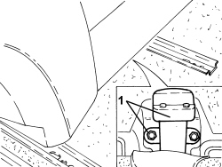

1040A74 INERTIA SWITCH FOR ELECTRIC PUMP SUPPLY CIRCUIT R + R
- Path
- Procedures > 10 ENGINE > 1040 FUEL TANK AND PIPES > 1040A FUEL TANK AND COMPONENTS > 1040A74 INERTIA SWITCH FOR ELECTRIC PUMP SUPPLY CIRCUIT R + R
- Kind
- repair procedure (removal / refitting; the operation number is the code)
- Applies to
- all engines; all production periods
- Interactive page
- https://sloeber94.github.io/elrnDB-aBrrSpdr/en/#/946001887
Applies to: all engines; all production periods
 Removing
Removing
 Refitting
Refitting- Move the driver side front seat forward.
1. Lower the floor covering, unscrew the nuts and remove the inertia switch as far as necessary to disconnect the electrical connection.
Description | Connector | |
|---|---|---|
1 | Inertia switch |

Applies to: all engines; all production periods
Refitting
Removing- Connect the electrical connection for the inertia switch.
- Place the inertia switch in its housing and secure it using the nuts.
- Raise the floor covering and restore the front seat to the normal driving position.
Topics linked from this page (1)
Topics that link to this page (12)
- E3040 CENTRAL LOCKING - WIRING DIAGRAM
- E3040 CENTRAL LOCKING - COMPONENT LOCATION
- E5010 IGNITION AND RECHARGING - WIRING DIAGRAM
- E5010 IGNITION AND RECHARGING - COMPONENT LOCATION
- E5010 IGNITION AND RECHARGING - WIRING DIAGRAM
- E5010 IGNITION AND RECHARGING - COMPONENT LOCATION
- E5030 PETROL ENGINE ELECTRONIC MANAGEMENT - WIRING DIAGRAM
- E5030 PETROL ENGINE ELECTRONIC MANAGEMENT - COMPONENT LOCATION
- E5030 PETROL ENGINE ELECTRONIC MANAGEMENT - WIRING DIAGRAM
- E5030 PETROL ENGINE ELECTRONIC MANAGEMENT - COMPONENT LOCATION
- E5050 DIESEL ENGINE ELECTRONIC MANAGEMENT - WIRING DIAGRAM
- E5050 DIESEL ENGINE ELECTRONIC MANAGEMENT - COMPONENT LOCATION